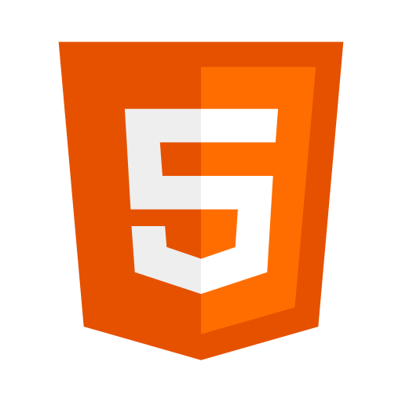

Sobre mim
Estudante de Ciência da Computação e desenvolvimento web, trabalho como auxiliar de suporte tecnico junior em uma empresa que vende sistemas ERP para empresas do pais.
Estou aprofundando minha base Full-Stack com cursos e documentações no momento, mas meu foco e maior interesse estão no Back-end.
No futuro, quero me aprofundar em toda a parte do lado do servidor e pelo vasto universo da Inteligência Artificial, compreendendo como sao feitas e como agregam para o ser humano.
Cresci rodeado de tecnologia, música e jogos e foi exatamente isso que me trouxe até aqui. A cada dia que passa me interesso mais pelo que vou me tornar no futuro.
No meu tempo livre gosto de jogar alguns jogos, ver videos explicativos sobre o que anda acontecendo no mundo e me atualizar sobre assuntos de interesse pessoal.
Skills
